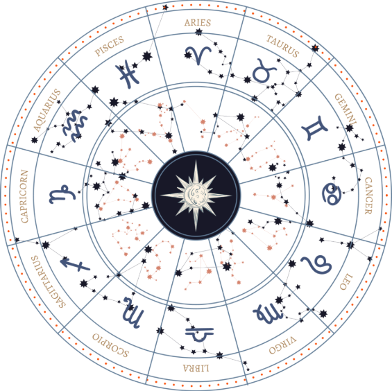

Testimonials
what followers says
At Guruji, every seeker walks a unique path guided by divine wisdom. Our devotees’ heartfelt experiences reflect the peace, clarity, and blessings they’ve received through Guruji’s guidance. Here's what they have to say about their spiritual journey with us

